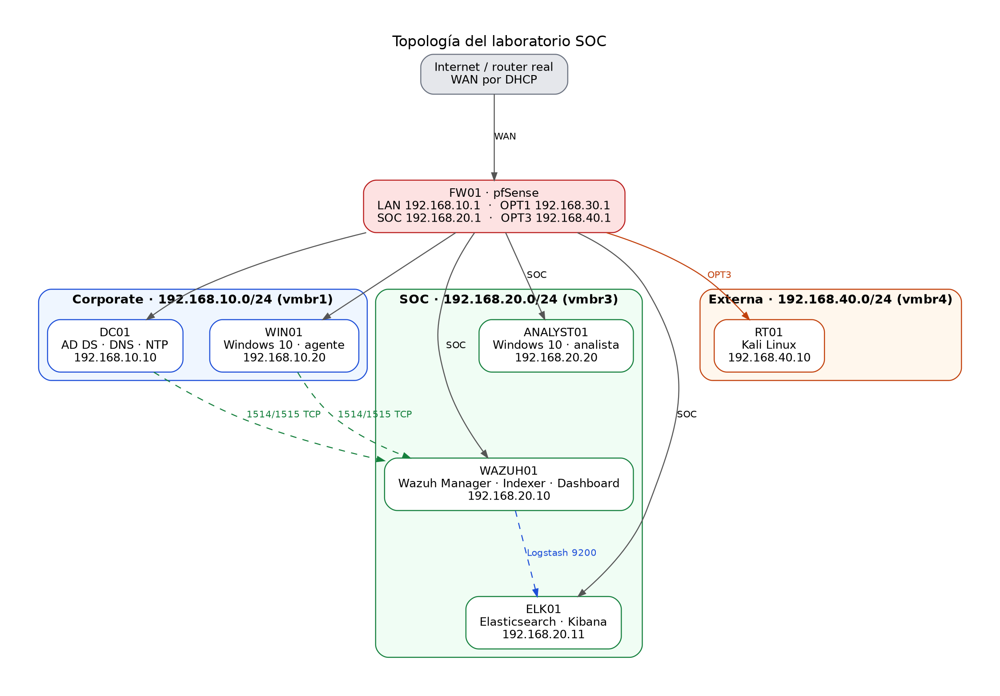
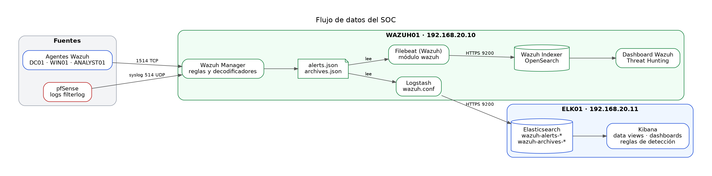

Laboratorio SOC con Wazuh, Elastic Stack, pfSense, Active Directory y Kali Linux
Este documento describe cómo levantar un laboratorio de centro de operaciones de seguridad (SOC) con virtualización en Proxmox. Incluye la topología, la configuración de cada equipo, las integraciones entre herramientas, las reglas de detección y el plan de pruebas desde Kali Linux.
Las contraseñas aparecen como marcadores (CONTRASEÑA_ELASTIC, CONTRASEÑA_ADMIN, etc.). Guárdalas en un gestor de contraseñas y nunca en el chat ni en capturas.
1. Objetivo
Construir un entorno que simule una empresa con su red corporativa, un atacante externo y un centro de monitoreo, de forma que:
- Los eventos de los equipos Windows (inicios de sesión, cambios en el dominio) lleguen a Wazuh.
- Los bloqueos y permisos del firewall pfSense queden registrados y consultables.
- Las alertas se vean en dos plataformas: el dashboard de Wazuh y Kibana (Elastic Stack).
- El equipo de pruebas Kali Linux pueda generar actividad que el SOC detecte.
2. Arquitectura

Flujos clave
- Los agentes de Windows envían eventos al manager Wazuh por TCP 1514 (datos) y 1515 (registro).
- pfSense envía sus registros de firewall por syslog UDP 514 al manager Wazuh.
- Wazuh guarda las alertas y los archivos completos. Logstash los envía a Elastic (ELK01).
- El indexer de Wazuh recibe las alertas con su propio Filebeat, que instala el asistente.
- Kali solo llega a la red corporativa. No tiene acceso a la red SOC.
Flujo de datos

3. Plan de direccionamiento
| Interfaz pfSense | Bridge | Red | IP del firewall | Equipos |
|---|---|---|---|---|
| vtnet0 (WAN) | vmbr0 | Router real | DHCP | Ninguno |
| vtnet1 (LAN) | vmbr1 | Corporate 192.168.10.0/24 | 192.168.10.1 | DC01, WIN01 |
| vtnet2 (OPT1) | vmbr2 | Red Team 192.168.30.0/24 | 192.168.30.1 | Sin equipos |
| vtnet3 (OPT2) | vmbr3 | SOC 192.168.20.0/24 | 192.168.20.1 | WAZUH01, ELK01, ANALYST01 |
| vtnet4 (OPT3) | vmbr4 | Externa 192.168.40.0/24 | 192.168.40.1 | RT01 |
| VMID | Nombre | Función | Red | IP | DNS | vCPU | RAM | Disco |
|---|---|---|---|---|---|---|---|---|
| 100 | FW01 | pfSense CE | Todas | Según interfaz | - | 2 | 8 GB | 20 GB |
| 101 | DC01 | AD DS, DNS, NTP | vmbr1 | 192.168.10.10 | 127.0.0.1 | 4 | 32 GB | 80 GB |
| 103 | WIN01 | Windows 10 Pro | vmbr1 | 192.168.10.20 | 192.168.10.10 | 2 | 16 GB | 50 GB |
| 105 | RT01 | Kali Linux | vmbr4 | 192.168.40.10 | 1.1.1.1 | 4 | 16 GB | 60 GB |
| 106 | WAZUH01 | Wazuh Server | vmbr3 | 192.168.20.10 | 192.168.20.1 | 4 | 32 GB | 100 GB |
| 107 | ELK01 | Elasticsearch, Kibana | vmbr3 | 192.168.20.11 | 192.168.20.1 | 6 | 32 GB | 150 GB |
| 108 | ANALYST01 | Windows 10 Pro | vmbr3 | 192.168.20.20 | 192.168.10.10 | 2 | 8 GB | 40 GB |
Dominio: lab.local (NetBIOS LAB).
Recursos del host: 256 GB de RAM. Las VMs suman unos 152 GB, así que queda margen. Desactiva el ballooning en las VMs de Wazuh, Elastic y Windows.
4. Preparación en Proxmox
- Crea los bridges
vmbr0avmbr4en el nodo antes de las VMs. - Asigna a pfSense cinco interfaces de red, una a cada bridge, en el orden
vtnet0avtnet4. - Para cada VM, en Hardware > Memory, desactiva el ballooning.
- Instala cada sistema con su IP estática. Expande el volumen LVM si el instalador deja espacio libre:
sudo lvextend -l +100%FREE /dev/ubuntu-vg/ubuntu-lv
sudo resize2fs /dev/ubuntu-vg/ubuntu-lv
df -h /
- Toma una snapshot de cada VM cuando esté funcionando, para tener puntos de restauración.
5. pfSense (FW01)
5.1 Asignar interfaces y direcciones
En Interfaces > Assignments asigna vtnet1 a LAN, vtnet2 a OPT1, vtnet3 a OPT2 (SOC) y vtnet4 a OPT3. Para cada interfaz OPT, en Interfaces > [nombre], activa la interfaz, configura IPv4 estático y pon la IP con máscara /24 indicada en la tabla.
5.2 Acceso al panel web
En System > Advanced > Admin Access, incluye SOC (OPT2) en las interfaces de escucha de la WebGUI si quieres administrar pfSense desde la red SOC.
En Interfaces > WAN > Reserved Networks, desmarca Block private networks y Block bogon networks, porque la WAN recibe una dirección privada de tu router.
5.3 DNS Resolver (Unbound)
En Services > DNS Resolver, activa el resolver y, en Network Interfaces, incluye SOC (OPT2) o All. Así WAZUH01 y ELK01 resuelven nombres a través de 192.168.20.1.
5.4 Envío de syslog a Wazuh
En Status > System Logs > Settings, en Remote Logging Options:
| Campo | Valor |
|---|---|
| Enable Remote Logging | Activado |
| Remote log servers | 192.168.20.10:514 |
| Remote Syslog Contents | Firewall Events |
| Transport | UDP |
5.5 Zona horaria y NTP (opcional)
En System > General Setup, define la zona horaria del laboratorio. En Services > NTP, puedes activar la interfaz LAN para que pfSense sirva hora a la red corporativa.
5.6 Reglas de firewall
Todas las reglas son Pass. Lo que no está permitido queda bloqueado por defecto. En OPT2, el destino del firewall es OPT2 address (192.168.20.1), no This Firewall.
LAN (Corporate)
| Código | Proto | Origen | Destino | Puerto | Motivo |
|---|---|---|---|---|---|
| LAN-01 | TCP | 192.168.10.0/24 | 192.168.20.10 | 1514-1515 | Registro y datos de agentes Wazuh |
| LAN-02 | UDP | 192.168.10.0/24 | 192.168.20.10 | 1514 | Eventos de agentes por UDP |
| LAN-04 | Cualquiera | LAN net | Cualquiera | Cualquiera | Salida a Internet y acceso general |
OPT2 (SOC)
| Código | Proto | Origen | Destino | Puerto | Motivo |
|---|---|---|---|---|---|
| SOC-01 | ICMP | 192.168.20.0/24 | OPT2 address | - | Diagnóstico |
| SOC-02 | TCP | 192.168.20.0/24 | OPT2 address | 443 | Panel de pfSense |
| SOC-03 | TCP | 192.168.20.0/24 | OPT2 address | 53 | DNS (Unbound) |
| SOC-04 | UDP | 192.168.20.0/24 | OPT2 address | 53 | DNS (Unbound) |
| SOC-05 | TCP | 192.168.20.0/24 | Cualquiera | 80, 443 | Descargas de paquetes |
| SOC-06 | TCP | 192.168.20.20 | 192.168.10.10 | 53 | DNS de ANALYST01 hacia DC01 |
| SOC-07 | UDP | 192.168.20.20 | 192.168.10.10 | 53 | DNS por UDP |
| SOC-08 | TCP | 192.168.20.20 | 192.168.10.10 | 88 | Kerberos |
| SOC-09 | UDP | 192.168.20.20 | 192.168.10.10 | 88 | Kerberos por UDP |
| SOC-10 | TCP | 192.168.20.20 | 192.168.10.10 | 389 | LDAP |
| SOC-11 | UDP | 192.168.20.20 | 192.168.10.10 | 389 | LDAP por UDP |
| SOC-12 | TCP | 192.168.20.20 | 192.168.10.10 | 445 | SMB y políticas de grupo |
| SOC-13 | TCP | 192.168.20.20 | 192.168.10.10 | 135 | RPC endpoint mapper |
| SOC-14 | TCP | 192.168.20.20 | 192.168.10.10 | 636 | LDAPS |
| SOC-15 | TCP | 192.168.20.20 | 192.168.10.10 | 3268 | Catálogo global |
| SOC-16 | UDP | 192.168.20.20 | 192.168.10.10 | 123 | NTP |
| SOC-17 | TCP | 192.168.20.20 | 192.168.10.10 | 49152-65535 | RPC dinámico para el canal seguro y la unión al dominio |
La regla SOC-17 es indispensable. Sin ella, la unión al dominio falla con el error "RPC server is unavailable", aunque los puertos 135 y 445 respondan.
OPT1 (Red Team): sin reglas. Queda aislada.
OPT3 (Kali)
| Código | Proto | Origen | Destino | Puerto | Motivo |
|---|---|---|---|---|---|
| OPT3-01 | Cualquiera | 192.168.40.0/24 | 192.168.10.0/24 | Cualquiera | Pruebas de ataque contra Corporate |
| OPT3-02 | TCP | 192.168.40.0/24 | Cualquiera | 80 | Descarga de herramientas |
| OPT3-03 | TCP | 192.168.40.0/24 | Cualquiera | 443 | Descarga de herramientas |
Kali no tiene reglas hacia la red SOC, así que no llega a WAZUH01 ni a ELK01.
Documento completo de reglas: reglas_firewall_pfsense.md.
6. Active Directory (DC01)
6.1 Configuración de red
New-NetIPAddress -InterfaceAlias "Ethernet" -IPAddress 192.168.10.10 -PrefixLength 24 -DefaultGateway 192.168.10.1
Set-DnsClientServerAddress -InterfaceAlias "Ethernet" -ServerAddresses 192.168.10.10
Rename-Computer -NewName "DC01" -Restart
6.2 Instalar AD DS y DNS
Tras reiniciar, como Administrador:
Install-WindowsFeature AD-Domain-Services, DNS -IncludeManagementTools
Restart-Computer
Reinicia antes de promocionar. Sin ese reinicio, la promoción falla con el mensaje de cambio de rol pendiente.
6.3 Promocionar a controlador de dominio
$dsrm = Read-Host -AsSecureString "Contraseña DSRM"
Install-ADDSForest -DomainName "lab.local" -DomainNetbiosName "LAB" -InstallDns -SafeModeAdministratorPassword $dsrm -Force
El equipo se reinicia solo. Tras entrar como LAB\Administrator:
Set-DnsServerForwarder -IPAddress 1.1.1.1
Get-ADDomain
Resolve-DnsName lab.local
6.4 Hora y NTP
Set-TimeZone -Id "Eastern Standard Time"
w32tm /config /manualpeerlist:"0.pool.ntp.org,0x8 1.pool.ntp.org,0x8" /syncfromflags:manual /reliable:yes /update
Restart-Service w32time
w32tm /resync /rediscover
Activa el servidor NTP para que WAZUH01, ELK01 y pfSense puedan sincronizar con DC01:
reg add "HKLM\SYSTEM\CurrentControlSet\Services\W32Time\TimeProviders\NtpServer" /v Enabled /t REG_DWORD /d 1 /f
reg add "HKLM\SYSTEM\CurrentControlSet\Services\W32Time\Config" /v AnnounceFlags /t REG_DWORD /d 5 /f
Restart-Service w32time
Y el controlador debe estar sano:
dcdiag /test:sysvolcheck /test:replications /test:dns
Las pruebas deben dar passed. Antes de unir equipos, toma una snapshot de DC01.
7. Unión de equipos al dominio (WIN01 y ANALYST01)
7.1 Requisitos
Cada equipo debe tener:
- IP estática en su red, con gateway de pfSense.
- DNS apuntando a 192.168.10.10 (DC01).
- Hora sincronizada con DC01 (diferencia menor de un minuto).
- Las reglas de firewall correspondientes, incluida SOC-17 en el caso de ANALYST01.
7.2 Configuración de red de ANALYST01 (ejemplo)
New-NetIPAddress -InterfaceAlias "Ethernet" -IPAddress 192.168.20.20 -PrefixLength 24 -DefaultGateway 192.168.20.1
Set-DnsClientServerAddress -InterfaceAlias "Ethernet" -ServerAddresses 192.168.10.10
Rename-Computer -NewName "ANALYST01" -Restart
7.3 Comprobaciones antes de unir
Resolve-DnsName lab.local
Test-NetConnection 192.168.10.10 -Port 389
Test-NetConnection 192.168.10.10 -Port 445
w32tm /stripchart /computer:192.168.10.10 /samples:3 /dataonly
7.4 Unión al dominio
Add-Computer -DomainName "lab.local" -Credential (Get-Credential LAB\Administrator) -Restart
Tras reiniciar, inicia sesión con LAB\Administrator o con un usuario de dominio, y verifica:
(Get-CimInstance Win32_ComputerSystem).Domain
Test-ComputerSecureChannel
nltest /dsgetdc:lab.local
Debe mostrar lab.local y True.
8. Elastic Stack (ELK01)
8.1 Repositorio e instalación
sudo apt update && sudo apt install -y apt-transport-https curl gnupg
curl -fsSL https://artifacts.elastic.co/GPG-KEY-elasticsearch | sudo gpg --dearmor -o /usr/share/keyrings/elastic.gpg
echo "deb [signed-by=/usr/share/keyrings/elastic.gpg] https://artifacts.elastic.co/packages/8.x/apt stable main" | sudo tee /etc/apt/sources.list.d/elastic-8.x.list
sudo apt update
sudo apt install -y elasticsearch kibana
Guarda la contraseña del usuario elastic que muestra la instalación.
8.2 Elasticsearch
Edita /etc/elasticsearch/elasticsearch.yml y deja activa esta línea:
network.host: 192.168.20.11
sudo systemctl enable --now elasticsearch
curl -k -u elastic:CONTRASEÑA_ELASTIC "https://192.168.20.11:9200/"
8.3 Kibana
Genera el token de enrolamiento y ejecuta el asistente:
sudo /usr/share/elasticsearch/bin/elasticsearch-create-enrollment-token -s kibana
sudo /usr/share/kibana/bin/kibana-setup
Genera las claves de cifrado y añádelas a /etc/kibana/kibana.yml:
sudo /usr/share/kibana/bin/kibana-encryption-keys generate
sudo nano /etc/kibana/kibana.yml
Al final del archivo, cada línea sin sangría:
server.host: "192.168.20.11"
server.port: 5601
xpack.encryptedSavedObjects.encryptionKey: "CLAVE_1"
xpack.reporting.encryptionKey: "CLAVE_2"
xpack.security.encryptionKey: "CLAVE_3"
Estas claves no deben cambiarse. Si cambian, Kibana no puede leer los objetos guardados (dashboards, reglas, conectores).
sudo systemctl enable --now kibana
sleep 90
sudo ss -tlnp | grep 5601
Debe aparecer 192.168.20.11:5601. Desde ANALYST01, abre http://192.168.20.11:5601 con un navegador actualizado, porque la versión 8.19 no carga en navegadores antiguos.
9. Wazuh Server (WAZUH01)
9.1 Instalación asistida
Descarga el instalador de la versión 4.14 y ejecútalo:
curl -sO https://packages.wazuh.com/4.14/wazuh-install.sh
head -n 1 wazuh-install.sh
sudo bash ./wazuh-install.sh -a
La primera línea debe ser #!/bin/bash. Al final, el script muestra las credenciales de admin. Guárdalas.
Para recuperarlas más adelante:
sudo tar -xOf wazuh-install-files.tar wazuh-install-files/wazuh-passwords.txt
9.2 Memoria del indexer
Con 32 GB de RAM en la VM, limita el heap del indexer a la mitad:
sudo nano /etc/wazuh-indexer/jvm.options
-Xms16g
-Xmx16g
sudo systemctl restart wazuh-indexer
sleep 120
free -h
Sin límite, el indexer ocupa toda la memoria y el sistema deja de responder.
9.3 Recepción de syslog de pfSense
Edita /var/ossec/etc/ossec.conf una sola vez:
sudo nano /var/ossec/etc/ossec.conf
Dentro de <global>, deja solo estas dos líneas, con valor yes:
<logall>yes</logall>
<logall_json>yes</logall_json>
Dentro de <ossec_config>, fuera de <global>, añade el receptor:
<remote>
<connection>syslog</connection>
<port>514</port>
<protocol>udp</protocol>
<allowed-ips>192.168.20.1</allowed-ips>
</remote>
sudo grep -n "logall" /var/ossec/etc/ossec.conf
sudo systemctl restart wazuh-manager
sudo ss -ulnp | grep 514
Los registros de pfSense quedan en /var/ossec/logs/archives/archives.json. El campo location vale 192.168.20.1.
10. Agentes Wazuh (WIN01, DC01 y ANALYST01)
En cada equipo Windows, como administrador, registra el agente apuntando al manager:
Stop-Service WazuhSvc
Remove-Item "C:\Program Files (x86)\ossec-agent\client.keys" -ErrorAction SilentlyContinue
cd "C:\Program Files (x86)\ossec-agent"
.\agent-auth.exe -m 192.168.20.10 -A NOMBRE_EQUIPO
Start-Service WazuhSvc
Get-Content "C:\Program Files (x86)\ossec-agent\ossec.log" -Tail 10
Sustituye NOMBRE_EQUIPO por WIN01, DC01 o ANALYST01. Busca Valid key received o Connected to the server en el log.
En WAZUH01 confirma el estado:
sudo /var/ossec/bin/agent_control -l
Los tres agentes deben aparecer como Active.
11. Logstash: envío a Elastic (WAZUH01)
Logstash lee los archivos de Wazuh y los envía a ELK01.
11.1 Instalación y memoria
curl -fsSL https://artifacts.elastic.co/GPG-KEY-elasticsearch | sudo gpg --dearmor -o /usr/share/keyrings/elastic.gpg
echo "deb [signed-by=/usr/share/keyrings/elastic.gpg] https://artifacts.elastic.co/packages/8.x/apt stable main" | sudo tee /etc/apt/sources.list.d/elastic-8.x.list
sudo apt update
sudo apt install -y logstash
En /etc/logstash/jvm.options deben estar estas líneas:
-Xms1g
-Xmx1g
11.2 Certificado de Elastic
Copia el contenido de /etc/elasticsearch/certs/http_ca.crt de ELK01 y pégalo en WAZUH01:
sudo mkdir -p /etc/logstash/certs
sudo nano /etc/logstash/certs/elk-ca.crt
11.3 Contraseña en el keystore
Así la contraseña no queda en texto plano:
sudo /usr/share/logstash/bin/logstash-keystore --path.settings /etc/logstash create
sudo /usr/share/logstash/bin/logstash-keystore --path.settings /etc/logstash add ELASTIC_PASS
sudo chown logstash:logstash /etc/logstash/logstash.keystore
11.4 Permisos de lectura sobre los logs de Wazuh
sudo usermod -aG wazuh logstash
sudo chmod 640 /var/ossec/logs/alerts/alerts.json /var/ossec/logs/archives/archives.json
sudo chmod 750 /var/ossec/logs/alerts /var/ossec/logs/archives
11.5 Ruta de logs del servicio
Logstash necesita la variable de ruta de logs. Añádela a /etc/default/logstash:
echo 'LS_LOGS="/var/log/logstash"' | sudo tee -a /etc/default/logstash
sudo chown -R logstash:logstash /var/log/logstash /var/lib/logstash /etc/logstash
11.6 Pipeline
sudo nano /etc/logstash/conf.d/wazuh.conf
input {
file {
path => "/var/ossec/logs/alerts/alerts.json"
codec => "json"
start_position => "end"
sincedb_path => "/var/lib/logstash/sincedb_alerts"
tags => ["alerts"]
}
file {
path => "/var/ossec/logs/archives/archives.json"
codec => "json"
start_position => "end"
sincedb_path => "/var/lib/logstash/sincedb_archives"
tags => ["archives"]
}
}
output {
elasticsearch {
hosts => ["https://192.168.20.11:9200"]
user => "elastic"
password => "${ELASTIC_PASS}"
ssl_enabled => true
ssl_certificate_authorities => ["/etc/logstash/certs/elk-ca.crt"]
index => "wazuh-%{[tags][0]}-4.x-%{+YYYY.MM.dd}"
}
}
Valida y arranca el servicio:
sudo /usr/share/logstash/bin/logstash -t --path.settings /etc/logstash -f /etc/logstash/conf.d/wazuh.conf
sudo systemctl enable --now logstash
sleep 60
curl -s http://localhost:9600/_node/stats/pipelines?pretty | grep -E '"status"|"successes"'
El estado debe ser green y el output debe mostrar respuestas 200.
11.7 Comprobación en ELK01
curl -k -u elastic:CONTRASEÑA_ELASTIC "https://192.168.20.11:9200/_cat/indices/wazuh-*?v"
Deben aparecer wazuh-alerts-4.x-AAAA.MM.DD y wazuh-archives-4.x-AAAA.MM.DD con docs.count creciendo.
12. Kibana: vistas de datos
Crea dos data views en Stack Management > Data Views:
| Nombre | Patrón | Campo de tiempo | Para qué |
|---|---|---|---|
| Alertas Wazuh | wazuh-alerts-* |
@timestamp |
Alertas por agente, gravedad y descripción |
| Registros Wazuh | wazuh-archives-* |
@timestamp |
Tráfico de pfSense y eventos completos |
Después de crearlos, pulsa Refresh fields en cada uno.
En Discover, filtra el firewall con:
location : "192.168.20.1"
Y los bloqueos con:
location : "192.168.20.1" and full_log : *block*
12.1 Dashboard de alertas
Cuatro visualizaciones en el dashboard Alertas Por Agentes:
- Alertas por agente: barras verticales, eje horizontal
agent.name.keyword(Top 10) y eje vertical Count. - Alertas a lo largo del tiempo: líneas,
@timestampcomo Date histogram y Count. - Intentos de inicio de sesión fallidos: tabla con
rule.groups : authentication_failed, filas poragent.name.keyword. - Alertas de nivel alto: tabla con
rule.level >= 10, filas porrule.description.keyword.
12.2 Dashboard de monitoreo de reglas
Clona [Elastic Security] Detection rule monitoring desde Analytics > Dashboards > Clone. Es un dashboard gestionado por Kibana, así que la copia es la que puedes modificar.
13. Reglas de detección
Se crean en Security > Rules > Detection rules (SIEM), con Create new rule > Custom query. En el paso Source, quita los índices por defecto y deja solo el que corresponde. Programación: cada 5 minutos, look-back de 5 minutos.
| # | Nombre | Índice | Consulta | Severidad | Riesgo |
|---|---|---|---|---|---|
| 1 | Intentos de inicio de sesión fallidos (Wazuh) | wazuh-alerts-* |
rule.groups : authentication_failed |
Medium | 50 |
| 2 | Múltiples fallos de inicio de sesión (Wazuh) | wazuh-alerts-* |
rule.groups : authentication_failures |
High | 70 |
| 3 | Alertas de nivel alto (Wazuh) | wazuh-alerts-* |
rule.level >= 10 |
High | 73 |
| 4 | Bloqueos TCP del firewall pfSense en SOC (Wazuh) | wazuh-archives-* |
location : "192.168.20.1" and full_log : *block* and full_log : *tcp* and full_log : *vtnet3* |
Low | 21 |
| 5 | Actividad de seguridad en Windows (Wazuh) | wazuh-alerts-* |
rule.groups : windows_security and rule.level >= 5 |
Medium | 50 |
Notas de configuración
- Si aparece el aviso de índice no encontrado, revisa que el patrón coincide exactamente con el nombre del índice, incluido el prefijo
wazuh-. - La regla 4 usa Max alerts per run a 999 y una consulta filtrada. Sin filtro, un firewall genera miles de alertas por ejecución.
- Suppress alerts by requiere licencia Platinum o superior, por eso no se usa.
14. Pruebas de funcionamiento
14.1 Bloqueo de conexión desde la red SOC
Desde ANALYST01 (192.168.20.20), intenta un puerto que no está permitido hacia DC01:
Test-NetConnection 192.168.10.10 -Port 9998
La conexión se bloquea. pfSense registra el bloqueo en la interfaz vtnet3. En WAZUH01 aparece en el archivo de archivos:
sudo grep "9998" /var/ossec/logs/archives/archives.json | grep "filterlog" | tail -n 1
El evento llega a Elastic con location: "192.168.20.1", y su full_log contiene 192.168.20.20,192.168.10.10,...,9998.
14.2 Autenticación
Los inicios de sesión de los equipos del dominio llegan a wazuh-alerts-* con agent.name y la regla correspondiente. Búscalos en Discover con:
agent.name : "DC01" and rule.groups : windows_security
15. Escenarios de ataque desde Kali Linux (RT01)
Esta sección es el plan de pruebas. Completa la columna de resultado con lo que observes en Wazuh y en Kibana.
Observado hasta ahora: Kali (192.168.40.100) envió consultas DNS al firewall por la interfaz OPT3, y pfSense las bloqueó porque la zona no tiene regla DNS. El registro aparece en wazuh-archives-*.
| Prueba | Herramienta | Objetivo | Qué debe detectar el SOC | Resultado |
|---|---|---|---|---|
| Escaneo de puertos | nmap -sS 192.168.10.0/24 |
DC01 y WIN01 | Bloqueos de pfSense en OPT3 y eventos de conexión | Pendiente |
| Fuerza bruta SMB | crackmapexec smb 192.168.10.10 -u usuarios.txt -p claves.txt |
DC01 | Varios authentication_failures |
Pendiente |
| Fuerza bruta RDP o WinRM | hydra o evil-winrm |
WIN01 | Inicios de sesión fallidos en el agente | Pendiente |
| Enumeración de usuarios AD | ldapsearch -x -H ldap://192.168.10.10 |
DC01 | Consultas LDAP desde el exterior (si OPT3 tiene regla) | Pendiente |
Para cada prueba, anota la hora UTC de inicio, el resultado y la regla que se disparó. Así podrás relacionar el ataque con la alerta en Kibana.
16. Lecciones y buenas prácticas
- Usa IPs estáticas y DNS coherentes. Un equipo unido al dominio debe resolver
lab.localcon DC01. - Revisa la regla RPC dinámica (SOC-17) antes de intentar cualquier unión al dominio.
- Mantén las claves de cifrado de Kibana. Sin ellas, los objetos guardados no se pueden leer.
- Limita la memoria de cada servicio Java a la mitad de la RAM de su VM.
- Usa un único destino por proceso de envío. Logstash a Elastic y el Filebeat de Wazuh al indexer, sin duplicar lectores.
- Revisa los índices de hoy en Kibana antes de depurar el resto. Un data view con campos antiguos muestra vacío aunque los datos existan.
- Cambia cualquier contraseña que aparezca en un chat o en una captura.
- Toma snapshots cuando cada VM esté validada.
17. Cierre
El laboratorio cubre tres capas:
- Red y control de acceso: pfSense segmenta Corporate, SOC y la zona externa, y registra cada bloqueo.
- Identidad y endpoints: DC01 gestiona el dominio, y WIN01 y ANALYST01 envían sus eventos a Wazuh.
- Detección y análisis: Wazuh genera alertas, Logstash las envía a Elastic, y Kibana y el dashboard de Wazuh permiten investigarlas.